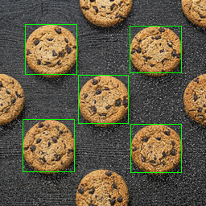

一、題目說明與本頁目的
Summary 表格的用途不是重新解釋所有演算法，而是把整份 Lab7 最重要的驗證結果集中整理。對本設計而言，Summary 需要清楚呈現：RTL simulation 是否全數通過、每一個 pattern 的錯誤數、總錯誤數、P4 模擬時間、目前是否完成 synthesis / gate-level simulation，以及還有哪些欄位需等待 Design Compiler 報告補上。
二、實驗結果總表
| 項目 | 結果 | 詳細說明 |
|---|---|---|
| RTL All Pass | ✓ PASS | Pattern 1 至 Pattern 4 皆已在 ModelSim RTL simulation 通過，表示目前 RTL 行為與 testbench golden 比對結果一致。 |
| SYN All Pass | 待補 | 目前尚未提供 drawBbox_syn.v 與 drawBbox_syn.sdf，因此 gate-level simulation 不能自行填 PASS，應等 Design Compiler 合成後補上。 |
| Pattern 1 Error | 0 | P1 Simulation PASS，輸出圖檔為 drawBbox_result_p1.bmp，可作為第一組測資之視覺證據。 |
| Pattern 2 Error | 0 | P2 Simulation PASS，代表第二組測資在 bounding box 位置與 pixel 顏色上皆符合 golden result。 |
| Pattern 3 Error | 0 | P3 Simulation PASS，表示多物件或較複雜物件情境下，CCL 與 BBox 結果仍正確。 |
| Pattern 4 Error | 0 | P4 Simulation PASS，為最終綜合測試結果之一，並成功產生 drawBbox_result_p4.bmp。 |
| Total Error | 0 | 全部 pattern 的錯誤總數為 0，代表輸出與 golden answer 在 pixel-level 完全一致。 |
| Grade Class | A / Pixel-perfect | 以目前 RTL 驗證資料判斷，P1~P4 皆 error = 0，因此可歸類為 pixel-perfect 的 RTL 結果。 |
| P4 Simulation Time | 24011725 ns | ModelSim log 中紀錄最後 $finish 時間為 24011725 ns，可放入 Summary 表格。 |
| Total Cell Area | 待補 | 需由 area_rpt.txt 或 Design Compiler report 讀取 Total cell area 後填入，不建議自行估計。 |
drawBbox_syn.v、drawBbox_syn.sdf、area_rpt.txt，Summary 裡的 SYN All Pass 與 Total Cell Area 應保留為「待補」，避免報告填入未驗證資料。三、P1～P4 Pattern 結果視覺化
下方以卡片方式呈現四組 pattern 的輸出結果。這種排版比單純列檔名更容易讓讀者理解：每個測資都已完成 bounding box overlay，並對應到 ModelSim log 中的 PASS 結果。

RTL PASS｜Error = 0

RTL PASS｜Error = 0

RTL PASS｜Error = 0

RTL PASS｜Error = 0
四、驗證流程與結果關係
驗證流程中最重要的是 Compare 階段。testbench 會將 DUT 寫入 AnsSRAM 的結果與 golden answer 逐 pixel 比對，只要任一 pixel 的 32-bit RGB 值不同，就會被列為 error。因此 Total Error = 0 代表不只是 bounding box 大致位置正確，而是最終輸出影像的每個像素皆與標準答案相同。
五、ModelSim Log 摘要
P2 Simulation PASS!!
P3 Simulation PASS!!
P4 Simulation PASS!!
P1 errors = 0
P2 errors = 0
P3 errors = 0
P4 errors = 0
TOTAL errors = 0
ALL P1~P4 PASS!!
Finish Time = 24011725 ns
六、Summary 表格填寫建議
七、報告可直接使用文字
本設計已於 ModelSim RTL simulation 中完成 Pattern 1 至 Pattern 4 的驗證。根據模擬結果，四組測資皆顯示 Simulation PASS，且 P1、P2、P3、P4 的錯誤數皆為 0，總錯誤數亦為 0。此結果表示本設計輸出的 bounding box overlay 影像與 golden result 在 pixel-level 上完全一致。P4 模擬結束時間為 24011725 ns。後續 synthesis 相關欄位，例如 gate-level simulation result、Total Cell Area 與 timing report，需以 Design Compiler 產生之 drawBbox_syn.v、drawBbox_syn.sdf 與 report 檔案為準，待合成完成後再補入最終報告。